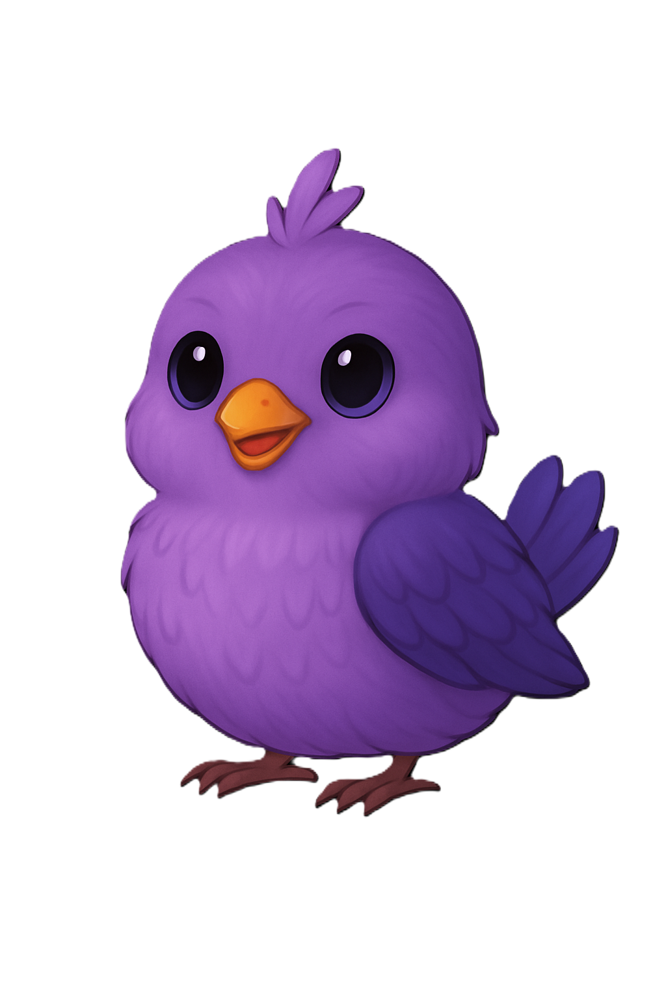
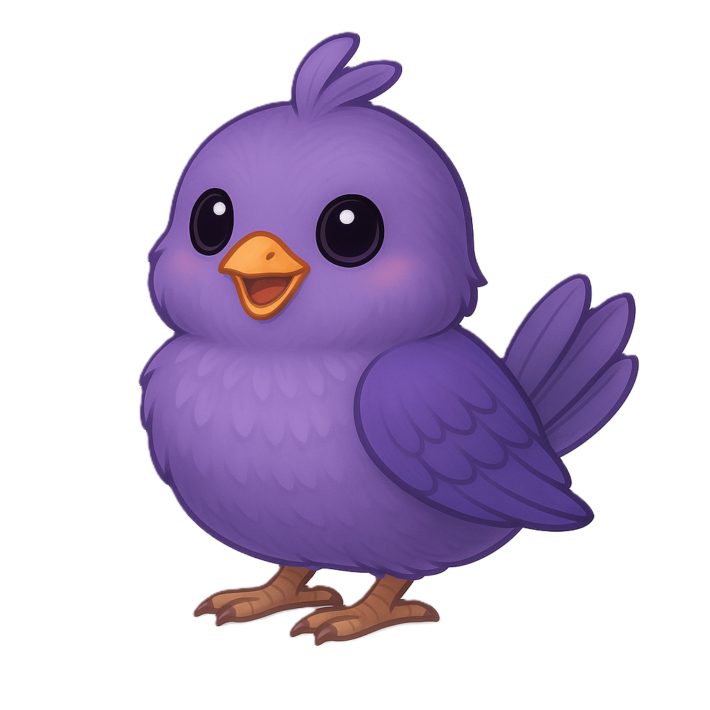

1. Start With a Feeling
Kids begin by choosing a feeling that matches what’s happening inside — angry, sad, worried, invisible, excited, and more. No pressure. No judgment. Just honesty.

2. Meet Your VentPal
Each feeling connects to the bird who understands it best. Your VentPal explains the feeling in kid‑friendly language and helps you understand what’s going on inside.

3. Grow Together
Kids can draw, write, or reflect with their VentPal. As they grow emotionally, their bird grows too — from nestling to feathered.

4. Join a Circle
Kids can share their reflections with trusted adults in safe, kid‑controlled circles. Their VentPal — now a confident percher — stays with them as a guide.